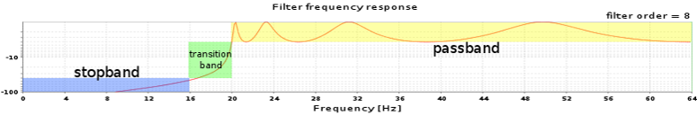

This file describes how to create and edit time domain sample filters using this dialog.
To create or edit a filter, you need to specify the following parameters:
The image below presents a frequency response of a Chebyshev I high-pass filter. The filter was designed for the following parameters:
Please note that the frequency response given fulfills the requirements given. For example - the stopband ends at 16 Hz and all frequencies in the stopband are attenuated at least 40 dB. The passband begins at 20 Hz and all frequencies in the passband are attenuated at most by 3 dB.
An analogous frequency response graph for a band-stop filter will have two passbands (first: from 0 Hz to passband edge frequency 1, second: begins at passband edge frequency 2), one stopband (from stopband edge frequency 1 to stopband edge frequency 2), and two transition bands. A frequency response graph for a band-pass filter will have two stopbands, one passband, and two transition bands
Important - the maximum frequency which can be specified using the frequency controls in this dialog is the Nyquist frequency which is equal to the half of the sampling frequency.
The filter frequency response is a graph showing the filter's output spectrum, that is - how much each frequency's magnitude is attenuated in the signal which passes through the filter
To draw the frequency response of the filter designed using the controls in the Filter parameters panel, press the "Draw filter frequency response" button.
If the filter parameters are correct, the filter frequency response is drawn. Otherwise, a dialog containing error message is shown.
The most common error message says that the designed filter order is too big. This happens, when the filter parameters are too strict. The more strict the parameters are, the harder for the designer is to design a filter fulfilling the specification given. For example - it is very hard for the designer to design a filter having very narrow transition bands (a transition band is narrow when a passband edge frequency is very close to the corresponding stopband edge frequency), a very small value of ripple in the passband and having all of the frequencies in the stopband strongly attenuated.
So, if such an error shows up, please make the parameters less strict (pay special attention to the narrowness of the transition band, because this is the most common problem).
You may also change the Filter family of the filter. Filters approximated with the Chebyshev functions tend to have smaller filter order comparing to a Buttorworth filter with similar filter parameters. Filters approximated using the Elliptic functions have smaller filter order comparing to a Chebyshev filter having similar parameters.